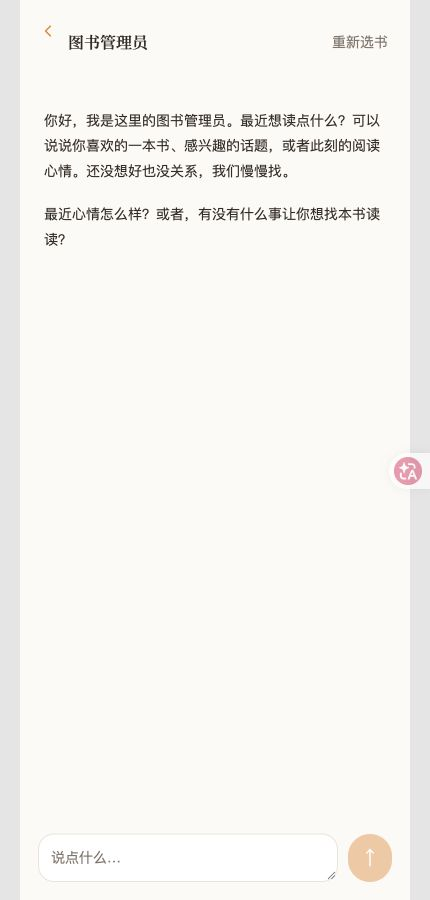
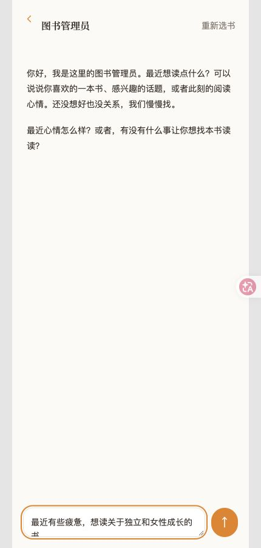
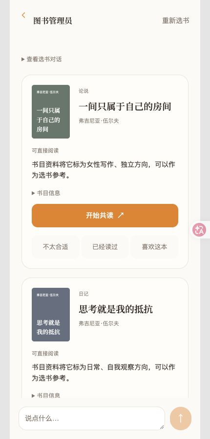
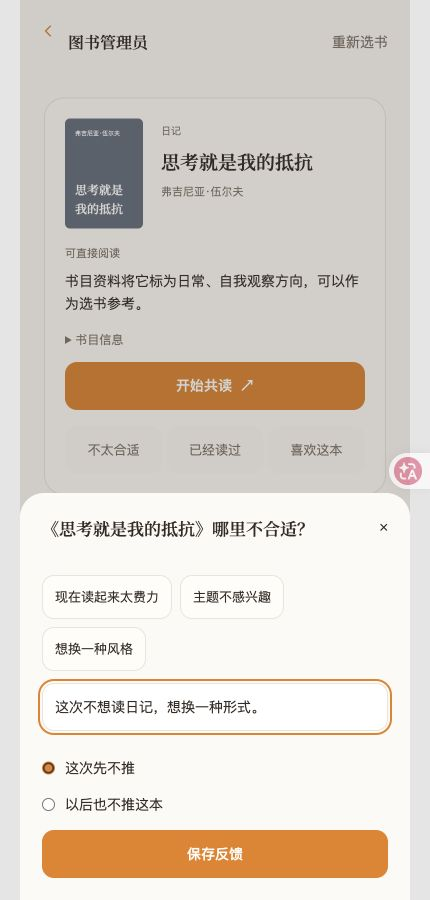
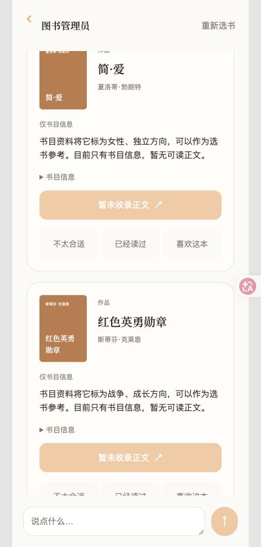
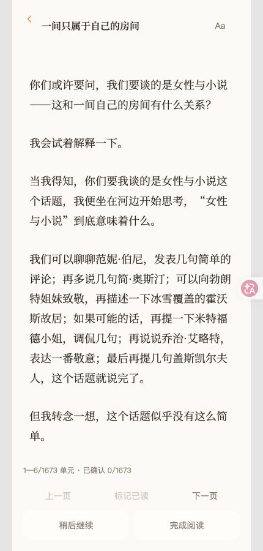

固定流程，
开放语义。
“恨海情天”无法只靠标签计分。模型负责理解、排序和解释；真实书籍 ID、排除项、权限与写入由规则检查。
23 个逻辑节点 ≠ 23 次模型调用。已有判断可以复用。AI PRODUCT CASE STUDY / 01
枢点 SHU 是一次关于阅读陪伴的产品实践。
先理解你此刻想要什么，再选书；读到哪里，就聊到哪里。
不只把一本书推荐给你，
也让你更容易开始、继续和回来。
THE ACTUAL DEMO
直接截取现有 Demo，保留原有橙色手机界面。
点击图片，可以查看原图。

从心情入口开始，系统开放询问，不预设固定情绪。

输入疲惫、独立和女性成长等需求，没有点名书籍。

返回多本书、推荐理由和正文可读状态。

对其中一本说明原因，本次选择“这次先不推”。

保存反馈后查看新结果，被反馈的书已从本轮结果移除。

从保留的推荐中选择一本，进入正文阅读。
录制于 2026.10.08 · 独立演示会话 · 离线规则模式，无付费模型调用。视频为实际操作期间连续截帧，缩短操作间停顿，无配音。此次完整展示需求输入 → 推荐理由 → 反馈 → 新结果 → 阅读；没有发生模型追问，推荐理由来自书目标签，不能代表模型语义理解与排序的效果。另看阅读与选段提问短片 ↗
PRODUCT × ENGINEERING
让模型承担理解，
让确定的规则守住边界。
“恨海情天”无法只靠标签计分。模型负责理解、排序和解释；真实书籍 ID、排除项、权限与写入由规则检查。
23 个逻辑节点 ≠ 23 次模型调用。已有判断可以复用。历史偏好不应盖过今天的需要。先检查记录是否有效，再判断它是偏好、回避依据，还是仅供理解的背景。
当前语义召回覆盖偏好记忆；状态与事件召回仍待扩展。从 Astra 的质量上限试验，切换到 Sol／medium 做批量评测准备。先用小样本记录真实用量，再决定扩大规模。
调用前预留预算；超时或无用量返回，不把已发生的费用记成零。EVIDENCE, WITH BOUNDARIES
阶段记录 · 2026.10.07
数据随项目进展更新。
验证了合成样本中的语义节点调用、数据契约、失败保护和成本计量。6 条推荐旅程未发生模型降级。
尚未证明真实书库的推荐质量、长期用户价值或生产级稳定性。小样本费用不是正式 120 条评测的预算。
MY ROLE & NEXT
我提出场景、节点职责和模型／规则取舍，借助 AI 完成代码实现、复核与测试，并持续区分设计、实际实现和已验证结果。
下一步：完善正式评测集，测试真实书库适配度，提升已读内容的语义检索能力。